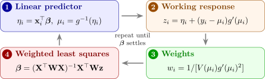

11.4 The exponential family and generalized linear models
Logistic regression is one member of a family. A random variable \(y\) belongs to the exponential family if its density or probability function has the form \[ f(y; \theta , \phi ) = \exp \Bigl \{\frac {y\theta - b(\theta )}{a(\phi )} + c(y, \phi )\Bigr \} , \] where \(\theta \) is the natural parameter, \(\phi \) a dispersion parameter, and \(a\), \(b\), \(c\) are known functions.
- Normal, \(N(\mu , \sigma ^2)\): \(\log f = \dfrac {y\mu - \mu ^2/2}{\sigma ^2} - \dfrac {y^2}{2\sigma ^2} - \tfrac 12\log (2\pi \sigma ^2)\), so \(\theta = \mu \), \(b(\theta ) = \theta ^2/2\), \(a(\phi ) = \sigma ^2\).
- Poisson, mean \(\mu \): \(\log f = y\log \mu - \mu - \log y!\), so \(\theta = \log \mu \), \(b(\theta ) = e^{\theta }\), \(a(\phi ) = 1\).
- Bernoulli, \(P(y = 1) = \pi \): \(\log f = y\log \frac {\pi }{1 - \pi } + \log (1 - \pi )\), so \(\theta = \operatorname {logit}\pi \), \(b(\theta ) = \log (1 + e^{\theta })\), \(a(\phi ) = 1\).
Theorem 11.4.1. If \(y\) belongs to the exponential family, then \[ E(y) = b'(\theta ) , \qquad \operatorname {Var}(y) = a(\phi )\,b''(\theta ) . \]
Proof. For every \(\theta \), \(\int f(y; \theta , \phi )\,dy = 1\) (a sum for a discrete \(y\)). Differentiating with respect to \(\theta \) under the integral, \[ 0 = \int \frac {y - b'(\theta )}{a(\phi )}\,f\,dy = \frac {E(y) - b'(\theta )}{a(\phi )} , \] so \(E(y) = b'(\theta )\). Differentiating \(\int (y - b'(\theta ))f\,dy = 0\) once more, \[ 0 = \int \Bigl [-b''(\theta ) + \frac {(y - b'(\theta ))^2}{a(\phi )}\Bigr ]f\,dy = -b''(\theta ) + \frac {\operatorname {Var}(y)}{a(\phi )} , \] which gives the variance. □
So the mean determines \(\theta \), and the variance is a function of the mean: \(\operatorname {Var}(y) = a(\phi )V(\mu )\) with \(V(\mu ) = b''(\theta )\), the variance function. For the normal \(V(\mu ) = 1\), for the Poisson \(b''(\theta ) = e^\theta = \mu \), and for the Bernoulli \(b''(\theta ) = e^\theta /(1 + e^\theta )^2 = \pi (1 - \pi )\), as they should be.
A generalized linear model has three components:
- (1)
- a random component: \(y_1, \dots , y_n\) independent, from the same exponential family, with means \(\mu _i\);
- (2)
- a linear predictor: \(\eta _i = \mathbf {x}_i^\top \boldsymbol \beta \);
- (3)
- a link function: a smooth monotone \(g\) with \(g(\mu _i) = \eta _i\).
The link for which \(g(\mu ) = \theta \), so that the natural parameter is the linear predictor, is the canonical link: the identity for the normal, the log for the Poisson, and the logit for the binomial. The normal linear model of Sections 2 to 10 is the GLM with normal errors and identity link. Other links are possible: the probit, \(g(\pi ) = \Phi ^{-1}(\pi )\), gives an S-curve very like the logistic.
Theorem 11.4.2 (Fitting a GLM). Let \(\mathbf {W} = \operatorname {diag}(w_i)\) with \(w_i = 1/\bigl [V(\mu _i)g'(\mu _i)^2\bigr ]\).
- (i)
- The score is \(\mathbf {U} = \frac {1}{a(\phi )}\mathbf {X}^\top \mathbf {W}\mathbf {G}(\mathbf {y} - \boldsymbol \mu )\), where \(\mathbf {G} = \operatorname {diag}(g'(\mu _i))\), and its variance (the information matrix) is \(\mathcal {I} = \frac {1}{a(\phi )}\mathbf {X}^\top \mathbf {WX}\).
- (ii)
- Fisher scoring, \(\boldsymbol \beta ^{(t+1)} = \boldsymbol \beta ^{(t)} + \mathcal {I}^{-1}\mathbf {U}\), is iteratively reweighted least squares: \[ \boldsymbol \beta ^{(t+1)} = (\mathbf {X}^\top \mathbf {WX})^{-1}\mathbf {X}^\top \mathbf {Wz}, \qquad z_i = \eta _i + (y_i - \mu _i)g'(\mu _i) . \]
- (iii)
- For the canonical link, \(\mathbf {U} = \frac {1}{a(\phi )}\mathbf {X}^\top (\mathbf {y} - \boldsymbol \mu )\), and Fisher scoring is Newton’s method.
Proof. (i) The log-likelihood of observation \(i\) is \(\ell _i = [y_i\theta _i - b(\theta _i)]/a(\phi ) + c(y_i, \phi )\), so \(\partial \ell _i/\partial \theta _i = (y_i - \mu _i)/a(\phi )\). By the chain rule through \(\theta _i \to \mu _i \to \eta _i \to \boldsymbol \beta \), with \(d\mu /d\theta = b''(\theta ) = V(\mu )\) and \(d\eta /d\mu = g'(\mu )\), \[ \frac {\partial \ell _i}{\partial \beta _j} = \frac {y_i - \mu _i}{a(\phi )}\cdot \frac {1}{V(\mu _i)}\cdot \frac {1}{g'(\mu _i)}\cdot x_{ij} = \frac {1}{a(\phi )}\,x_{ij}w_ig'(\mu _i)(y_i - \mu _i) . \] Summing over \(i\) gives \(\mathbf {U}\). The \(y_i\) are independent with \(\operatorname {Var}(y_i) = a(\phi )V(\mu _i)\), so \[ \operatorname {Var}(\mathbf {U}) = \frac {1}{a(\phi )^2}\mathbf {X}^\top \mathbf {WG}\bigl [a(\phi )\operatorname {diag}(V(\mu _i))\bigr ]\mathbf {GWX} = \frac {1}{a(\phi )}\mathbf {X}^\top \mathbf {WX} , \] because \(w_ig'(\mu _i)^2V(\mu _i) = 1\).
(ii) With \(\boldsymbol \eta = \mathbf {X}\boldsymbol \beta ^{(t)}\), \(\mathcal {I}\boldsymbol \beta ^{(t)} + \mathbf {U} = \frac {1}{a(\phi )}\mathbf {X}^\top \mathbf {W}\bigl [\boldsymbol \eta + \mathbf {G}(\mathbf {y} - \boldsymbol \mu )\bigr ] = \frac {1}{a(\phi )}\mathbf {X}^\top \mathbf {Wz}\), and multiplying by \(\mathcal {I}^{-1} = a(\phi )(\mathbf {X}^\top \mathbf {WX})^{-1}\) gives the formula; \(a(\phi )\) cancels.
(iii) For the canonical link \(\eta = \theta \), so \(g'(\mu ) = d\theta /d\mu = 1/V(\mu )\) and \(w_ig'(\mu _i) = 1/[V(\mu _i)g'(\mu _i)] = 1\). So \(\mathbf {U} = \mathbf {X}^\top (\mathbf {y} - \boldsymbol \mu )/a(\phi )\), and its derivative is \[ -\frac {1}{a(\phi )}\mathbf {X}^\top \operatorname {diag}\Bigl (\frac {d\mu _i}{d\eta _i}\Bigr )\mathbf {X} = -\frac {1}{a(\phi )}\mathbf {X}^\top \operatorname {diag}\bigl (V(\mu _i)\bigr )\mathbf {X} . \] This does not involve \(\mathbf {y}\), and it equals \(-\mathcal {I}\), since \(w_i = 1/[V(\mu _i)(1/V(\mu _i))^2] = V(\mu _i)\). So the Newton step and the scoring step coincide. □
For the binomial with the logit link, \(w_i = m_i\pi _i(1 - \pi _i)\) and \(z_i = \eta _i + (y_i - \mu _i)/w_i\), which is Theorem 11.2.2. For the normal with identity link, \(\mathbf {W} = \mathbf {I}\) and \(\mathbf {z} = \mathbf {y}\), so one step gives the least-squares estimate (Problem 11.6.6). The results on the approximate normality of \(\hat {\boldsymbol \beta }\) and on the likelihood ratio test carry over, with \(\mathcal {I}\) in place of \(\mathbf {X}^\top \mathbf {WX}\). The deviance is defined as before, \(D = 2a(\phi )[\ell (\text {saturated}) - \ell (\hat {\boldsymbol \beta })]\); for the normal model it is \(SS_{\mathrm {Res}}\).

Questions on this section
Stuck on something here? Ask below and it stays attached to this topic.